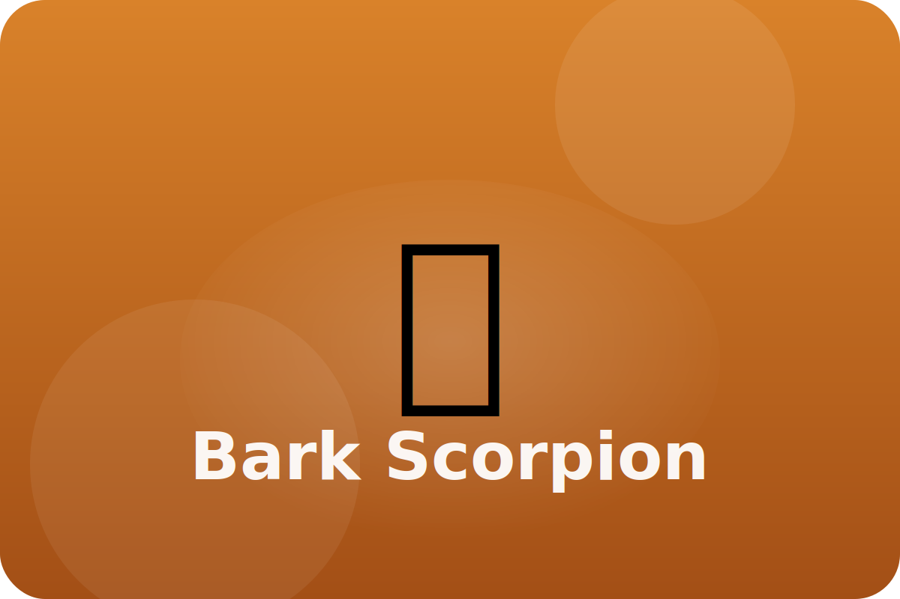

Desert
Nocturnal navigator
Bark scorpions hide in shady cracks by day. At night they hunt insects using touch and smell.
UV Glow
Their shells glow blue-green under moonlight, possibly helping them sense how bright the night is.
Sensitive Hairs
Tiny hairs on their legs feel vibrations, telling them when prey or predators are near.
Venom Sting
A curved tail delivers venom to stop prey quickly.
Keep exploring the Bark Scorpion
Watch the Bark Scorpion in action
Bark scorpion videos for kids